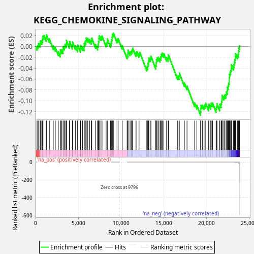
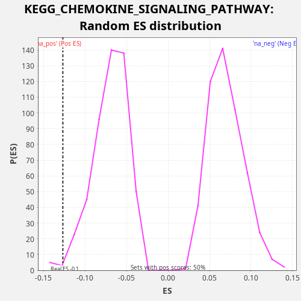

| Dataset | CCLE |
| Phenotype | NoPhenotypeAvailable |
| Upregulated in class | na_neg |
| GeneSet | KEGG_CHEMOKINE_SIGNALING_PATHWAY |
| Enrichment Score (ES) | -0.12676837 |
| Normalized Enrichment Score (NES) | -1.8201743 |
| Nominal p-value | 0.012 |
| FDR q-value | 0.06986903 |
| FWER p-Value | 0.72 |

| SYMBOL | RANK IN GENE LIST | RANK METRIC SCORE | RUNNING ES | CORE ENRICHMENT | |
|---|---|---|---|---|---|
| 1 | STAT1 | 169 | 0.529 | -0.0004 | No |
| 2 | GNG10 | 273 | 0.176 | 0.0021 | No |
| 3 | ARRB1 | 354 | 0.082 | 0.0054 | No |
| 4 | TIAM2 | 521 | 0.034 | 0.0052 | No |
| 5 | GRK3 | 567 | 0.027 | 0.0101 | No |
| 6 | CXCL16 | 727 | 0.015 | 0.0101 | No |
| 7 | CCR1 | 814 | 0.012 | 0.0133 | No |
| 8 | PLCB4 | 844 | 0.011 | 0.0188 | No |
| 9 | TIAM1 | 977 | 0.008 | 0.0200 | No |
| 10 | AKT2 | 1240 | 0.004 | 0.0157 | No |
| 11 | GRK4 | 1266 | 0.004 | 0.0214 | No |
| 12 | CXCL14 | 1614 | 0.002 | 0.0135 | No |
| 13 | CXCR6 | 2072 | 0.001 | 0.0011 | No |
| 14 | PIK3R1 | 2308 | 0.001 | -0.0021 | No |
| 15 | RAP1A | 2662 | 0.001 | -0.0102 | No |
| 16 | CCR4 | 2886 | 0.000 | -0.0128 | No |
| 17 | GRB2 | 2900 | 0.000 | -0.0066 | No |
| 18 | PRKACB | 3054 | 0.000 | -0.0063 | No |
| 19 | PRKCZ | 3219 | 0.000 | -0.0065 | No |
| 20 | FOXO3 | 3229 | 0.000 | -0.0001 | No |
| 21 | LYN | 3382 | 0.000 | 0.0003 | No |
| 22 | PIK3CD | 3457 | 0.000 | 0.0039 | No |
| 23 | PIK3CG | 3606 | 0.000 | 0.0044 | No |
| 24 | CDC42 | 3612 | 0.000 | 0.0110 | No |
| 25 | PIK3R2 | 3950 | 0.000 | 0.0035 | No |
| 26 | CCL28 | 3972 | 0.000 | 0.0094 | No |
| 27 | GSK3A | 4313 | 0.000 | 0.0018 | No |
| 28 | GNG5 | 4327 | 0.000 | 0.0080 | No |
| 29 | RAC1 | 4655 | 0.000 | 0.0010 | No |
| 30 | STAT3 | 4921 | 0.000 | -0.0034 | No |
| 31 | NFKBIB | 4946 | 0.000 | 0.0024 | No |
| 32 | PLCB3 | 5254 | 0.000 | -0.0038 | No |
| 33 | PXN | 5273 | 0.000 | 0.0022 | No |
| 34 | RHOA | 5503 | 0.000 | -0.0007 | No |
| 35 | RAP1B | 5683 | 0.000 | -0.0015 | No |
| 36 | PARD3 | 5685 | 0.000 | 0.0052 | No |
| 37 | GNAI2 | 5779 | 0.000 | 0.0081 | No |
| 38 | PRKACA | 5882 | 0.000 | 0.0105 | No |
| 39 | KRAS | 5928 | 0.000 | 0.0154 | No |
| 40 | AKT3 | 6104 | 0.000 | 0.0148 | No |
| 41 | PIK3R3 | 6316 | 0.000 | 0.0126 | No |
| 42 | VAV2 | 6519 | 0.000 | 0.0109 | No |
| 43 | SHC1 | 6576 | 0.000 | 0.0153 | No |
| 44 | GRK6 | 7015 | 0.000 | 0.0036 | No |
| 45 | PAK1 | 7258 | 0.000 | 0.0001 | No |
| 46 | IKBKB | 7319 | 0.000 | 0.0044 | No |
| 47 | PRKCB | 7366 | 0.000 | 0.0092 | No |
| 48 | GNB1 | 7414 | 0.000 | 0.0140 | No |
| 49 | STAT5B | 7439 | 0.000 | 0.0197 | No |
| 50 | STAT2 | 7649 | 0.000 | 0.0177 | No |
| 51 | PTK2B | 7777 | 0.000 | 0.0191 | No |
| 52 | MAP2K1 | 8252 | 0.000 | 0.0059 | No |
| 53 | GNAI3 | 8375 | 0.000 | 0.0075 | No |
| 54 | CRK | 8387 | 0.000 | 0.0138 | No |
| 55 | NRAS | 8770 | 0.000 | 0.0044 | No |
| 56 | MAPK1 | 8844 | 0.000 | 0.0081 | No |
| 57 | PIK3CB | 8902 | 0.000 | 0.0125 | No |
| 58 | ARRB2 | 8959 | 0.000 | 0.0169 | No |
| 59 | GNG13 | 8984 | 0.000 | 0.0226 | No |
| 60 | AKT1 | 9102 | 0.000 | 0.0244 | No |
| 61 | ADCY9 | 9528 | 0.000 | 0.0133 | No |
| 62 | GSK3B | 9665 | 0.000 | 0.0143 | No |
| 63 | ITK | 10131 | 0.000 | 0.0015 | No |
| 64 | XCL2 | 10711 | 0.000 | -0.0161 | No |
| 65 | GNB5 | 10808 | -0.000 | -0.0134 | No |
| 66 | MAPK3 | 10816 | -0.000 | -0.0070 | No |
| 67 | GNG3 | 11052 | -0.000 | -0.0101 | No |
| 68 | GNG12 | 11183 | -0.000 | -0.0088 | No |
| 69 | WASL | 11293 | -0.000 | -0.0067 | No |
| 70 | ROCK1 | 11373 | -0.000 | -0.0032 | No |
| 71 | CRKL | 11746 | -0.000 | -0.0122 | No |
| 72 | RELA | 11846 | -0.000 | -0.0096 | No |
| 73 | GNB2 | 12092 | -0.000 | -0.0131 | No |
| 74 | CHUK | 12200 | -0.000 | -0.0109 | No |
| 75 | BRAF | 13011 | -0.000 | -0.0383 | No |
| 76 | PRKX | 13123 | -0.000 | -0.0362 | No |
| 77 | JAK2 | 13152 | -0.000 | -0.0306 | No |
| 78 | JAK3 | 13232 | -0.000 | -0.0272 | No |
| 79 | GNGT1 | 13262 | -0.000 | -0.0216 | No |
| 80 | RAF1 | 13416 | -0.000 | -0.0213 | No |
| 81 | PREX1 | 13502 | -0.000 | -0.0181 | No |
| 82 | SOS2 | 14056 | -0.000 | -0.0347 | No |
| 83 | CCL26 | 14113 | -0.000 | -0.0303 | No |
| 84 | ADCY7 | 14138 | -0.000 | -0.0245 | No |
| 85 | FGR | 14222 | -0.000 | -0.0213 | No |
| 86 | CSK | 14354 | -0.000 | -0.0200 | No |
| 87 | NFKB1 | 14565 | -0.000 | -0.0221 | No |
| 88 | ADCY6 | 14654 | -0.000 | -0.0191 | No |
| 89 | HRAS | 14706 | -0.000 | -0.0145 | No |
| 90 | PRKCD | 14819 | -0.000 | -0.0124 | No |
| 91 | GNAI1 | 15004 | -0.000 | -0.0134 | No |
| 92 | BCAR1 | 15326 | -0.000 | -0.0202 | No |
| 93 | PTK2 | 15513 | -0.000 | -0.0213 | No |
| 94 | NFKBIA | 15544 | -0.000 | -0.0158 | No |
| 95 | CXCR4 | 16625 | -0.000 | -0.0545 | No |
| 96 | WAS | 16782 | -0.000 | -0.0543 | No |
| 97 | RAC2 | 16818 | -0.000 | -0.0491 | No |
| 98 | ADCY3 | 17405 | -0.000 | -0.0670 | No |
| 99 | DOCK2 | 17717 | -0.000 | -0.0733 | No |
| 100 | ROCK2 | 18610 | -0.001 | -0.1042 | No |
| 101 | PLCB2 | 18866 | -0.001 | -0.1081 | No |
| 102 | SHC3 | 19309 | -0.001 | -0.1200 | Yes |
| 103 | ADCY4 | 19333 | -0.002 | -0.1142 | Yes |
| 104 | GNB4 | 19349 | -0.002 | -0.1081 | Yes |
| 105 | CCR3 | 19511 | -0.002 | -0.1081 | Yes |
| 106 | NCF1 | 19710 | -0.002 | -0.1097 | Yes |
| 107 | XCR1 | 19818 | -0.002 | -0.1075 | Yes |
| 108 | PIK3CA | 19905 | -0.003 | -0.1043 | Yes |
| 109 | PLCB1 | 20248 | -0.003 | -0.1120 | Yes |
| 110 | VAV3 | 20273 | -0.004 | -0.1062 | Yes |
| 111 | VAV1 | 20491 | -0.004 | -0.1086 | Yes |
| 112 | SOS1 | 20550 | -0.005 | -0.1043 | Yes |
| 113 | GNG11 | 20710 | -0.006 | -0.1042 | Yes |
| 114 | GNGT2 | 21118 | -0.009 | -0.1146 | Yes |
| 115 | GRK2 | 21166 | -0.010 | -0.1099 | Yes |
| 116 | HCK | 21228 | -0.010 | -0.1057 | Yes |
| 117 | ADCY1 | 21537 | -0.016 | -0.1119 | Yes |
| 118 | CCL22 | 21565 | -0.016 | -0.1063 | Yes |
| 119 | ADCY5 | 21714 | -0.019 | -0.1057 | Yes |
| 120 | CCL27 | 21752 | -0.021 | -0.1006 | Yes |
| 121 | GRK5 | 21810 | -0.023 | -0.0962 | Yes |
| 122 | GRK7 | 21825 | -0.023 | -0.0900 | Yes |
| 123 | ELMO1 | 22035 | -0.033 | -0.0921 | Yes |
| 124 | CXCL5 | 22132 | -0.039 | -0.0894 | Yes |
| 125 | SHC2 | 22275 | -0.052 | -0.0886 | Yes |
| 126 | CXCR2 | 22320 | -0.057 | -0.0837 | Yes |
| 127 | XCL1 | 22430 | -0.070 | -0.0815 | Yes |
| 128 | CCR10 | 22440 | -0.072 | -0.0751 | Yes |
| 129 | CXCL12 | 22543 | -0.093 | -0.0727 | Yes |
| 130 | CXCL10 | 22585 | -0.103 | -0.0677 | Yes |
| 131 | CCL2 | 22656 | -0.125 | -0.0638 | Yes |
| 132 | CXCL11 | 22658 | -0.125 | -0.0571 | Yes |
| 133 | PIK3R5 | 22678 | -0.131 | -0.0512 | Yes |
| 134 | GNG4 | 22755 | -0.158 | -0.0476 | Yes |
| 135 | RASGRP2 | 22827 | -0.189 | -0.0439 | Yes |
| 136 | CCR7 | 22896 | -0.236 | -0.0400 | Yes |
| 137 | GNG2 | 22911 | -0.243 | -0.0338 | Yes |
| 138 | CCL20 | 23136 | -0.453 | -0.0365 | Yes |
| 139 | CXCL3 | 23216 | -0.605 | -0.0330 | Yes |
| 140 | GNG7 | 23269 | -0.744 | -0.0285 | Yes |
| 141 | CCL17 | 23319 | -0.920 | -0.0238 | Yes |
| 142 | SHC4 | 23375 | -1.123 | -0.0193 | Yes |
| 143 | CXCL2 | 23385 | -1.182 | -0.0130 | Yes |
| 144 | GNB3 | 23613 | -3.383 | -0.0158 | Yes |
| 145 | CXCL1 | 23717 | -5.911 | -0.0134 | Yes |
| 146 | CXCL8 | 23753 | -7.262 | -0.0081 | Yes |
| 147 | CXCL6 | 23794 | -9.306 | -0.0030 | Yes |
| 148 | CX3CL1 | 23857 | -15.493 | 0.0011 | Yes |

{kind=link}
{kind=link}